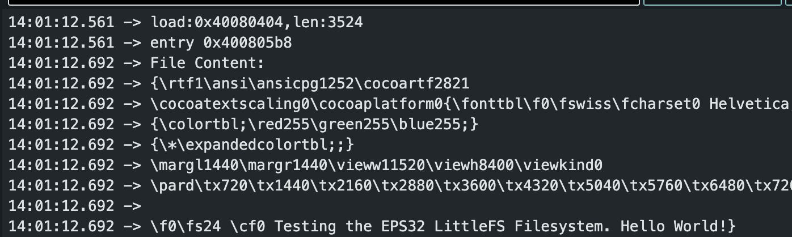
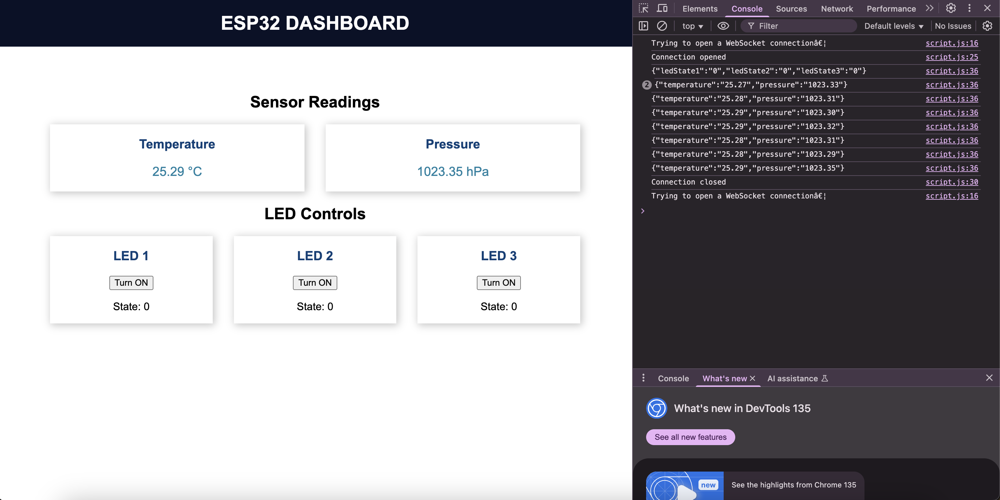
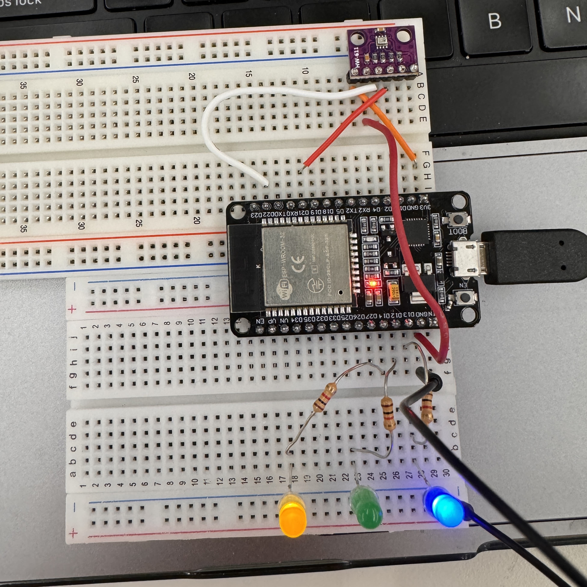

Neither Gautam nor I had any experience with any of the topics this week at all, whatsoever, so we decided to start slow and work our way up. The first step that we wanted to take was to decide which communication method we wanted to use. We went on to Random Nerd tutorials for ESP32 and browsed around until we found this tutorial on using a BME280 with WebSockets. We decided to give this a try since we thought that we had BME280s in the lab, and I wanted to explore this as a potential option for my heated vest. We went through the steps outlined in that tutorial to install LittleFS and get that up and running, which proved to be a very non-trivial process. However, after a lot of troubleshooting and realizing that the solution was to restart Arduino IDE, we got it to work.

After we got that working, we wired up the sensor according to the schematic in the tutorial, copied their code, and tried to run it, but failed. After doing extensive googling, we realized that we had a BMP module, not a BME module. Shoutout to timurmengazi on the Arduino Forum for asking this question and helping us figure that out. We got that sorted, adjusted the code accordingly, and boom! It worked! We were blown away by being able to see this reading on the website in 3-second intervals. However, this is where the successes really came to a screeching halt. We wanted to push this a bit further than just following some tutorial online, and we wanted to actually write some of our own code and try some of our own things out. We had just learned how to send data from the server to the client, so we wanted to experiment with sending data from the client to the server. To do this, we wired up three LEDS to the ESP32, wrote some code to have them regulated by sliders (inspired by this other Random Nerd tutorial), and tried to get it working. Lo and behold, FOUR HOURS LATER, we still could not get EVEN A BUTTON to turn them on and off to work. I cannot express how unbelievably frustrating this was that everything seemed right, but we just couldn't for the life of us get the stupid LED to turn on. Quickly, it became apparent that the issue was that the client was not sending data to the server, despite us telling it to, but we could not figure out why this may be the case or how to fix it.

After four hours and countless failures trying to address the same problem in a trillion different ways, we had to give up for the night.
On Day 2, we went to Nathan's office hours, and, of course, the issue was solved in less than an hour. Nathan suggested to add a couple debug lines to our preexisting debug lines that revealed that the code wasn't flowing through the code in any reasonable way. We changed around some messages that it was printing out, which then didn't change in the console log, showing us that LittleFS wasn't uploading or storing the files in the way that we thought it was. I don't know why LittleFS wasn't working, but this whole ordeal has shown us that LittleFS is hot garbage and don't ever use it. Instead, when we put all of our code into one giant arduino file including the html, css, and js, it worked perfectly. It was so frustrating that our code was right this entire time, but we wasted so much time wrestling with the stupid file system. Anyways, here are some pics of it working:

Wanting to add just a little bit more functionality to this project, we also wrote some code that made it so the LEDs light up as the sensor reads higher temperatures. We set intervals so that when we rested our finger on the sensor and it started to heat up, it would light up the LEDs sequentially, which would then turn off in reverse order as the sensor cooled down. This doesn't have much to do with WebSockets or networking, but it's still cool to see and have a bit more functionality to it.